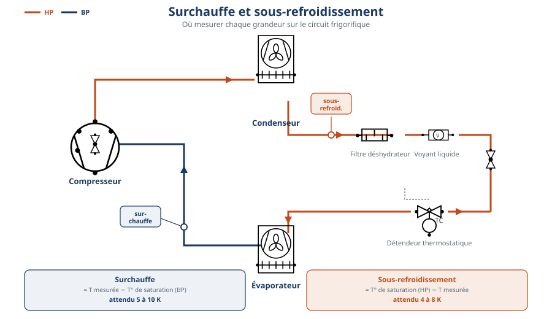

LPP
JACQUES RAYNAUD

| NiveauCAP IFCA 2A |
Thème / DomaineMise en service — contrôle de charge et réglages (suite de A5-a) |
Module A5-b — atelier 2/2 de S14Contrôle de la charge et réglages en fonctionnement |
SéquenceS14 · sem. 16, 23-27/02/2027 |
| Nom________________ |
Prénom________________ |
Date________________ |
Positionnement
01234
|
Mise en situation professionnelle
Le groupe de production de froid de votre chambre froide a été chargé et mis en service lors du module
précédent (A5-a). Ordre d'intervention n° S14-A5-02 : avant que le client ne reçoive son chantier,
vous devez contrôler que la charge en fluide est correcte une fois l'installation en fonctionnement,
l'ajuster si nécessaire, puis régler pressostat et détendeur selon la notice constructeur. Comme
chez un client, aucun ajustement de charge ne se fait sans validation du professeur : c'est un point
d'arrêt contractuel de votre chantier.
Objectifs — je serai capable de…
- lire une pression HP et une pression BP au manifold, installation en fonctionnement ;
- relever une température d'aspiration et une température de liquide sur la tuyauterie ;
- calculer la surchauffe (SC) et le sous-refroidissement (SR) à partir de mes relevés ;
- comparer mes résultats aux seuils autorisés (surchauffe 5-10 K, sous-refroidissement 4-8 K) et
décider : charge correcte, insuffisante, excessive, ou présence d'incondensables ;
- ajuster la charge (compléter ou retirer) sous validation, sans aucune perte de fluide à l'atmosphère ;
- régler le pressostat et/ou le détendeur selon la notice constructeur, validé par le professeur.
Prérequis — je sais déjà…
- poser un manifold sans perte de fluide et lire un manomètre BP (bleu) / HP (rouge) ;
- tirer au vide, charger et contrôler l'installation sous tension (module A5-a) ;
- les définitions et les deux formules de la surchauffe et du sous-refroidissement (vues en S11) ;
- consigner une installation électrique selon la NFC 18-510.
Si vous ne cochez pas tous ces prérequis, prévenez le professeur avant de commencer : un rappel court est possible pendant l'exercice au fil de l'eau.
Matériel
- Groupe de production de froid en fonctionnement, chargé lors du module A5-a (× 1 par binôme)
- Manifold 4 voies avec manomètres HP (rouge) et BP (bleu), déjà raccordé (× 1)
- Thermomètre de contact ou pince thermocouple, pour la ligne d'aspiration et la ligne liquide (× 1)
- Table de correspondance pression-température fournie par le professeur, selon le fluide de l'installation (× 1 par binôme)
- Bouteille de charge du fluide de l'installation, avec balance de charge (consommable, si besoin) (× 1)
- Bouteille de récupération dédiée, étiquetée (si besoin) (× 1)
- Tournevis de réglage adapté au pressostat / détendeur, sans forcer sur les curseurs (× 1)
- Notice constructeur de l'installation (× 1 par binôme)
- EPI : gants de manipulation fluide, lunettes de sécurité, chaussures de sécurité (× 1 jeu par élève)
- Feuilles de mise en service module F4, rubriques 3-4 (× 1 par binôme)
- Fiche des 5 cas d'école (mesures réelles) + fiche de relevés (ce document)
Consignes de sécurité
| Risque | Parade |
|---|
| Rejet de fluide à l'atmosphère | Interdiction formelle. Tout retrait de fluide passe par la bouteille de récupération dédiée, étiquetée (réglementation F-Gaz). |
| Bouteille chauffée pour accélérer un transfert | Jamais de flamme, jamais de source de chaleur directe sur une bouteille de fluide frigorigène. |
| Pressostat shunté (chaîne de sécurité inactive) | Interdiction formelle de shunter un pressostat, même pour tester un réglage. |
| Électrisation sur le circuit de commande (accès pressostat) | Consignation NFC 18-510 et VAT avant toute intervention sur le circuit de commande. |
| Projection de fluide au raccordement du manifold | Lunettes de sécurité, gants, ouverture lente et progressive des vannes. |
🚨 En cas d'incident — couper l'alimentation (arrêt d'urgence), alerter immédiatement le professeur,
ne jamais tenter seul un geste non validé sur la charge. Trousse de secours et arrêt d'urgence localisés en salle,
poste indiqué par le professeur en début de séance.
❄ inerWeb Édu — par F. Henninot · LPP Jacques Raynaud — Campus EQUATIO
créé le 09/07/2026 · © F. Henninot 2026 — diffusion pédagogique autorisée, mention de l'origine requise
LPP
JACQUES RAYNAUD
S14 · module A5-b · CAP IFCA 2A — document élève
Exercice au fil de l'eau (pendant le passage en tenue)
Sur le schéma réduit ci-dessous, repérez et entourez le point de mesure de la
surchauffe et le point de mesure du sous-refroidissement (rappel, vu en S11).

Schéma technique — bibliothèque de symboles inerWeb Édu.
Rappelez les deux formules (avec vos mots ou en symboles) :
Surchauffe =
Sous-refroidissement =
La notion du jour — un diagnostic se lit dans les écarts
Observez les deux relevés que le professeur présente au tableau.
Observation — Les deux relevés viennent de deux installations différentes.
L'une fonctionne normalement, l'autre a un défaut de charge. Sans calculer pour l'instant, qu'est-ce qui vous
paraît différent entre les deux ?
Question — À votre avis, comment un frigoriste sait-il, sans ouvrir la
machine, si la charge en fluide est correcte ?
On ne voit jamais directement la quantité de fluide dans un circuit fermé. On la
déduit de deux écarts de température, mesurés en fonctionnement : la surchauffe (SC), côté
aspiration, et le sous-refroidissement (SR), côté liquide. Comparés à des seuils autorisés, ces deux écarts
disent si la charge est correcte, insuffisante, excessive, ou s'il y a de l'air resté dans le circuit
(incondensables).
Cas d'école — diagnostic guidé (mesures réelles de chantier)
Les 5 cas suivants sont des mesures réelles, relevées par le professeur sur
d'anciens chantiers, sur deux fluides différents (R134a et R404A). Ils entraînent uniquement le calcul du
sous-refroidissement (SR) — même principe de soustraction que pour le SC, mais côté HP — avant de passer
aux relevés réels de VOTRE installation, où SC et SR seront calculés ensemble. Pour chaque cas : calculez
le SR, comparez-le au seuil autorisé (SR 4-8 K), puis décidez et justifiez par écrit.
Cas A — R134a
Pression HP relevée au manomètre = 12 bar · table R134a fournie : T° de saturation HP = 49,5 °C
T° de sortie condenseur mesurée = 42 °C
SR = K
Décision et justification :
Cas B — R134a
Pression HP relevée au manomètre = 10 bar · table R134a fournie : T° de saturation HP = 43 °C
T° de sortie condenseur mesurée = 28 °C
SR = K
Décision et justification :
Cas C — R134a
Pression HP relevée au manomètre = 20 bar · table R134a fournie : T° de saturation HP = 70 °C
T° de sortie condenseur mesurée = 64 °C
SR = K
Décision et justification :
Cas D — R404A
T° de saturation HP relevée sur la table R404A fournie = 45 °C
T° de sortie condenseur mesurée = 38 °C
SR = K
Décision et justification :
Cas E — R404A
Pression HP relevée au manomètre = 10 bar · table R404A fournie : T° de saturation HP = 20,2 °C
T° de sortie condenseur mesurée = 28 °C
SR = K
Décision et justification :
❄ inerWeb Édu — par F. Henninot · LPP Jacques Raynaud — Campus EQUATIO
créé le 09/07/2026 · © F. Henninot 2026 — diffusion pédagogique autorisée, mention de l'origine requise
LPP
JACQUES RAYNAUD
S14 · module A5-b · CAP IFCA 2A — document élève
Étape 1 — Relevés réels sur l'installation
Sur votre installation (poste chargé et mis en service au module A5-a), relevez au
manifold les pressions HP et BP, mesurez les températures d'aspiration et de liquide, puis lisez les températures
de saturation correspondantes sur la table pression-température fournie par le professeur (propre au
fluide de votre poste). N'oubliez jamais les unités.
| Grandeur | Valeur mesurée | Unité |
|---|
| Pression BP (manomètre bleu) | | bar |
| Pression HP (manomètre rouge) | | bar |
| T° de saturation BP (table fournie) | | °C |
| T° de saturation HP (table fournie) | | °C |
| T° d'aspiration mesurée | | °C |
| T° liquide mesurée | | °C |
| Surchauffe SC = T° aspiration − T° saturation BP | | K |
| Sous-refroidissement SR = T° saturation HP − T° liquide | | K |
Mon diagnostic (comparaison aux seuils SC 5-10 K / SR 4-8 K) :
Ma décision (charge correcte / à compléter / à retirer / incondensables suspectés) :
🔒 JALON — Validation du diagnostic avant tout ajustement de charge
Votre diagnostic est écrit et calculé. Vous appelez le professeur avec votre fiche de relevés. Vous
n'ajoutez et ne retirez jamais de fluide sans son visa.
Visa professeur : ________________ Heure : ________________
Étape 2 — Ajustement de la charge et réglages (après le jalon)
Selon votre diagnostic validé :
- Manque de charge : compléter par petites quantités depuis la bouteille de charge, à la balance, en
re-mesurant SC et SR après chaque ajout — ne jamais charger « d'un coup » ;
- Excès de charge : retirer une petite quantité vers la bouteille de récupération dédiée, en
re-mesurant après chaque retrait ;
- Incondensables suspectés (HP anormalement haute malgré un SR correct après ajustement) : le signaler
au professeur — la procédure de purge n'est pas réalisée par l'élève seul.
Notez ici les quantités ajoutées ou retirées et l'évolution de vos relevés à chaque
étape :
Réglage du pressostat et/ou du détendeur — Selon la notice constructeur de
votre installation, validée par le professeur, ajustez la ou les valeurs de consigne. Aucune valeur n'est
donnée dans ce document : chaque installation a sa propre notice.
| Organe réglé | Valeur de consigne (selon notice) | Validé par le professeur |
|---|
| Pressostat | | ☐ |
| Détendeur | | ☐ |
❄ inerWeb Édu — par F. Henninot · LPP Jacques Raynaud — Campus EQUATIO
créé le 09/07/2026 · © F. Henninot 2026 — diffusion pédagogique autorisée, mention de l'origine requise
LPP
JACQUES RAYNAUD
S14 · module A5-b · CAP IFCA 2A — document élève
Étape 3 — Contrôle final et feuilles de mise en service F4
Après ajustement (ou d'emblée si votre charge était déjà correcte), refaites un
relevé complet pour vérifier que SC et SR sont bien dans les seuils autorisés.
| Grandeur | Valeur de contrôle | Unité |
|---|
| Surchauffe SC | | K |
| Sous-refroidissement SR | | K |
Complétez ensuite les rubriques 3-4 des feuilles de mise en service module F4 à partir
de vos mesures réelles.
Question de compréhension — Pourquoi ne faut-il jamais charger ou retirer du
fluide « d'un coup », sans re-mesurer après chaque petite quantité ?
Rappel : tout retrait de fluide passe par la
bouteille de récupération dédiée — le rejet à l'atmosphère est interdit (réglementation F-Gaz).
Grille d'évaluation
Échelle FrigorX : 0 Non évalué · 1 Non acquis · 2 En cours d'acquisition · 3 Acquis · 4 Parfaitement maîtrisé.
| Compétence / savoir-être | Ancrage | 0
Non évalué | 1
Non acquis | 2
En cours d'acquisition | 3
Acquis | 4
Parfaitement maîtrisé |
|---|
| C4.5 Mesurer, comparer des grandeurs | sur T13 · S5.2 | Compétence non observée ce jour. | Lecture HP/BP ou température incorrecte, ou calcul SC/SR faux, sans le repérer. | Lecture et calcul corrects avec aide, ou une seule des deux grandeurs (SC ou SR) correctement calculée. | SC et SR correctement calculés seul à partir de relevés réels, comparaison correcte aux seuils autorisés. | Comme « Acquis », et détecte de lui-même une valeur aberrante dans son propre relevé et la re-mesure. |
| C4.6 Régler les valeurs de consigne | sur T14 · S5.6 | Compétence non observée ce jour. | Réglage réalisé sans lien avec le diagnostic, ou sans validation professeur. | Réglage cohérent avec le diagnostic mais aide nécessaire sur le geste ou la lecture de la notice. | Pressostat et/ou détendeur réglés selon la notice et le diagnostic, validés par le professeur, seul. | Comme « Acquis », et explique à un pair le lien entre son diagnostic et le réglage choisi. |
| C4.2 Manipuler le fluide et les huiles | sur T13 · S5.2 | Compétence non observée ce jour. | Geste de transfert non conforme (raccord mal serré, perte de fluide, bouteille non identifiée) ou tentative de rejet atmosphérique. | Geste globalement correct, aide ou rappel nécessaire sur un point (choix de bouteille, sens de transfert). | Ajustement de charge réalisé sans perte de fluide, bouteille de récupération dédiée utilisée correctement, sous validation du jalon. | Comme « Acquis », et justifie de lui-même pourquoi le rejet à l'atmosphère est interdit avant de commencer. |
| Savoir-être — honnêteté, sécurité, autonomie | observation continue | Non observé ce jour. | Valeurs arrangées pour coller au seuil attendu, ou jalon non respecté (ajustement sans validation). | Rigueur ou autonomie à consolider, rappels ponctuels nécessaires. | Relevés honnêtes même en cas d'écart, jalon respecté, autonomie dans le raisonnement du diagnostic. | Comme « Acquis », et aide spontanément un autre binôme sans compromettre son propre poste. |
Mon auto-positionnement (avant correction professeur) :
C4.5 : 01234
C4.6 : 01234
C4.2 : 01234
Documents à remettre
- Ce document complété (cas d'école, relevés réels, jalon signé, contrôle final)
- Feuilles de mise en service module F4, rubriques 3-4
- Carnet de bord (module F3) et bon de commande de la journée
D'après : LA SURCHAUFFE et le SR ; Calcul sous refroidissement Prof (cas CF3, CF7, CF10, CF11, CF16) ; reglage bp sous azote (cadrage S14).
❄ inerWeb Édu — par F. Henninot · LPP Jacques Raynaud — Campus EQUATIO
créé le 09/07/2026 · © F. Henninot 2026 — diffusion pédagogique autorisée, mention de l'origine requise
Annexe — document de travail
Schéma complet — points de mesure de la surchauffe et du sous-refroidissement
⚠ À imprimer de préférence en A3 PAYSAGE (une feuille par binôme) : c'est le document à garder sous les yeux pendant toute la manipulation. La version réduite en feuille 2 sert au repérage, celle-ci sert au travail.
❄ inerWeb Édu — par F. Henninot · LPP Jacques Raynaud — Campus EQUATIOcréé le 09/07/2026 · © F. Henninot 2026 — diffusion pédagogique autorisée, mention de l'origine requise
LPP
JACQUES RAYNAUD
S14 · module A5-b · CAP IFCA 2A — annexe
Table de correspondance pression → température de saturation
⚠ Grille vierge à compléter par le professeur, selon le fluide frigorigène réellement présent sur le poste
(table constructeur ou réglette pression-température officielle). Aucune valeur n'est préremplie ici :
la correspondance pression-température dépend entièrement du fluide.
| Fluide de l'installation (à préciser par le professeur) | |
|---|
| Pression relative (bar) | T° de saturation côté BP (°C) | T° de saturation côté HP (°C) |
|---|
| 0 | | |
| 1 | | |
| 2 | | |
| 3 | | |
| 4 | | |
| 5 | | |
| 6 | | |
| 8 | | |
| 10 | | |
| 12 | | |
| 15 | | |
| 18 | | |
| 20 | | |
| 25 | | |
Utilisation : repérer la pression lue au manomètre dans la colonne de gauche, lire en face la température de
saturation correspondante, pour le fluide indiqué en en-tête.
Pour aller plus loin sur inerweb.fr
Module en ligne
Surchauffe et sous-refroidissement
inerweb.fr/packs/fluides/res/surchauffe-sous-refroidissement-interactif/
Module en ligne
Pression et température
inerweb.fr/packs/fluides/res/pression-temperature-interactive/
❄ inerWeb Édu — par F. Henninot · LPP Jacques Raynaud — Campus EQUATIOcréé le 09/07/2026 · © F. Henninot 2026 — diffusion pédagogique autorisée, mention de l'origine requise